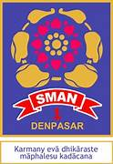

Selamat Datang di Website Resmi SMA N 1 Denpasar
Sekolah kami berkomitmen untuk memberikan pendidikan terbaik, berbasis ilmu pengetahuan dan karakter.
SMA Negeri 1 Denpasar, atau SMANSA Denpasar, merupakan salah satu Sekolah Menengah Atas Negeri unggulan di Kota Denpasar, Provinsi Bali. Didirikan pada 8 Agustus 1960, sekolah ini beralamat di Jl. Kamboja No. 4, Denpasar Utara, dan berada di bawah naungan Dinas Pendidikan, Kepemudaan, dan Olahraga Provinsi Bali.
Sekolah kami berkomitmen untuk memberikan pendidikan terbaik, berbasis ilmu pengetahuan dan karakter.